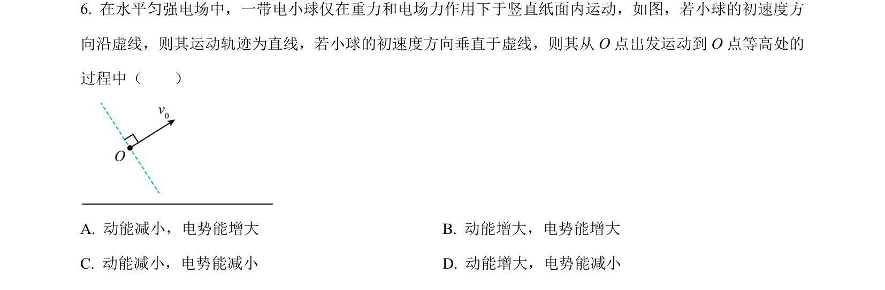
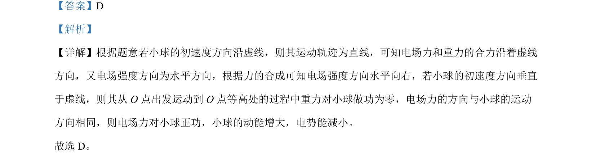

考点：电场力做功 动能定理 电势能

带电粒子在电场与重力场复合场中的运动与能量变化分析

📄 原 PDF 第 4 页：
素材/真题/吉林/2008-2024·（吉林）物理高考真题/2024年高考物理试卷（辽宁）（解析卷）.pdf
【答案】D 【解析】 【详解】根据题意若小球的初速度方向沿虚线，则其运动轨迹为直线，可知电场力和重力的合力沿着虚线 方向，又电场强度方向为水平方向，根据力的合成可知电场强度方向水平向右，若小球的初速度方向垂直 于虚线，则其从 O 点出发运动到 O 点等高处的过程中重力对小球做功为零，电场力的方向与小球的运动 方向相同，则电场力对小球正功，小球的动能增大，电势能减小。 故选 D。